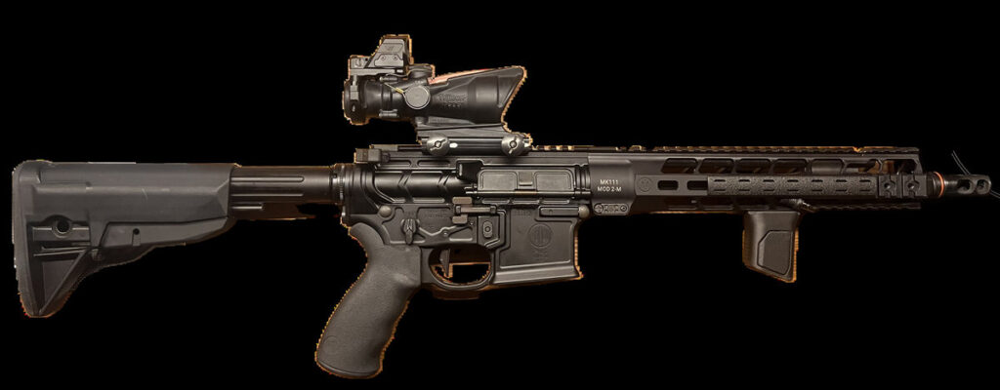
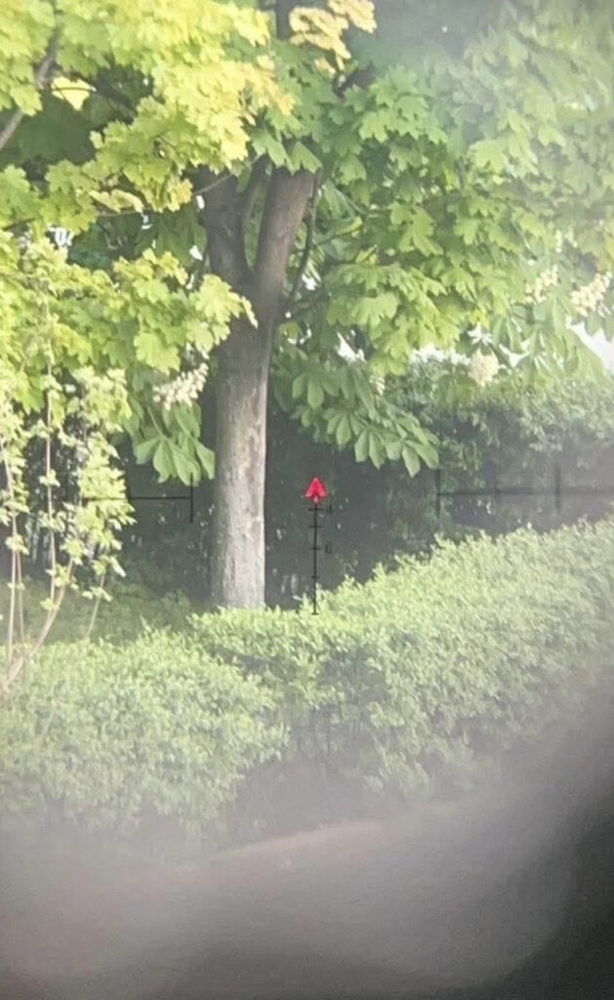
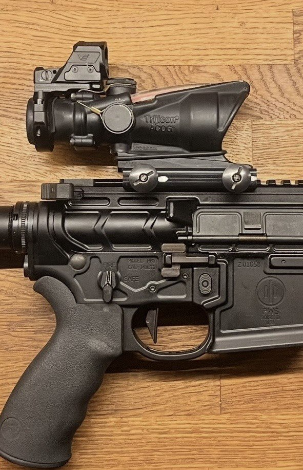
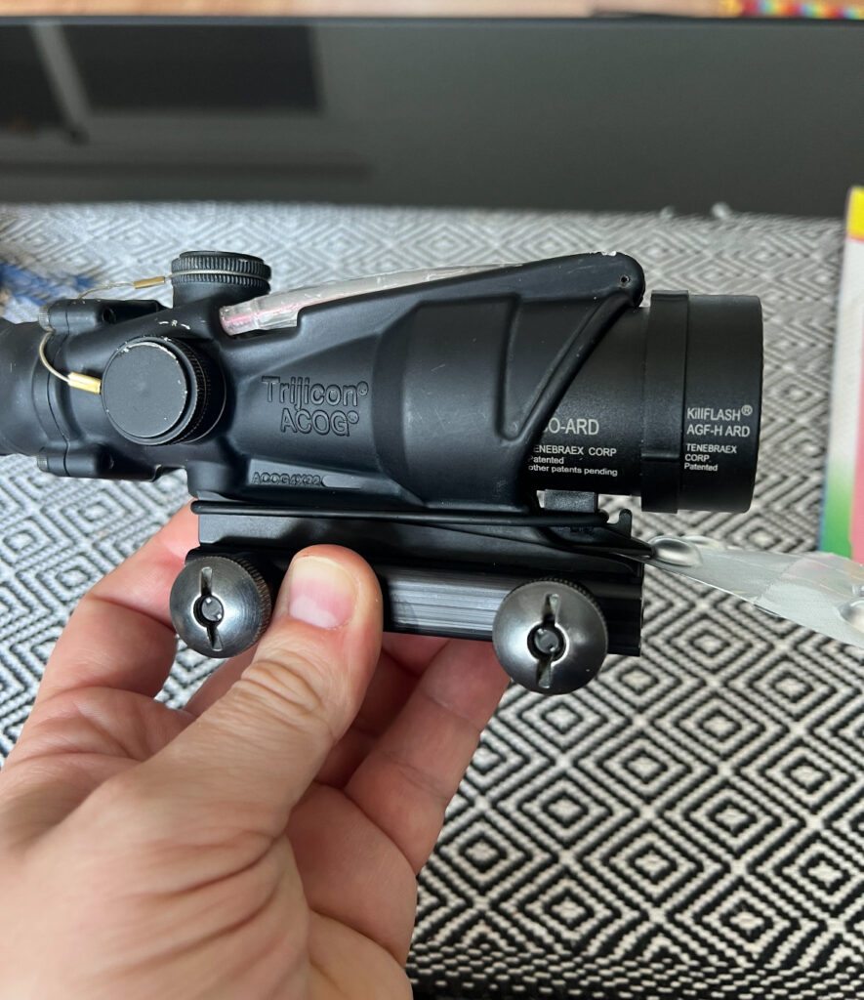
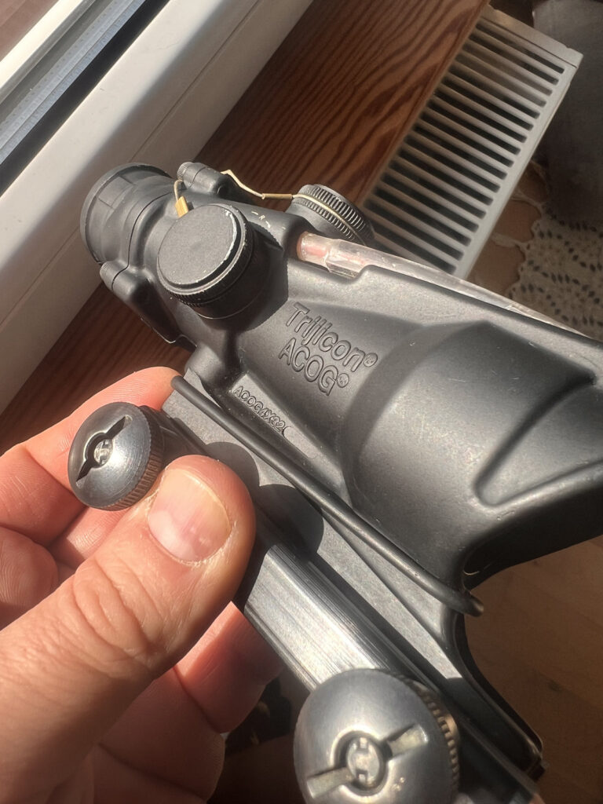
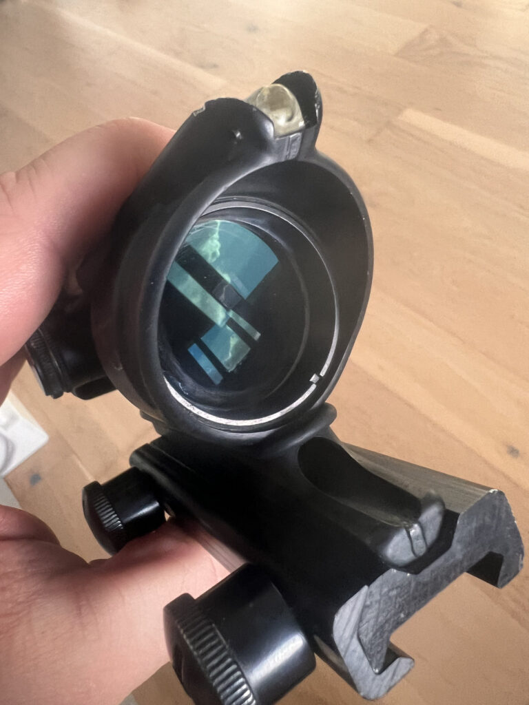

Trijicon ACOG TA31RCO — recenzja legendy. Celownik pancerny, który zawsze chciałem mieć.
2026-08-23
est ACOG i są celowniki. Ten pierwszy widziałeś w filmach, w relacjach z frontów całego świata, w każdej grze w którą grałeś jako dzieciak. Zawsze chciałem go mieć — i w końcu się udało. Mój egzemplarz pochodzi od amerykańskiego żołnierza z bazy w Niemczech. Trochę historii w środku, trochę legendy. Oto co z tego wyszło.

Trochę o tym, czym jest ACOG
ACOG to skrót od Advanced Combat Optical Gunsight. Konstrukcja pryzmatyczna o stałym powiększeniu 4x i obiektywie 32 mm, w służbie amerykańskiej piechoty od dekad. Żaden powiększający celownik nie był używany w boju częściej niż ACOG — i to nie jest marketingowy slogan, tylko fakt.
Sedno tej optyki to jedno: nie ma baterii. Siatka podświetlana jest trytem i światłowodem naraz. Światłowód sam zbiera światło dzienne i reguluje jasność siatki względem otoczenia, a tryt świeci w nocy (często jest już wypalony w starszych, używanych wersjach, wtedy warto przykleić mały w połowie zakryty wędkarski świetlik na nocne strzelanie). Nie włączasz, nie ładujesz, nie martwisz się, że padnie w najgorszym momencie. Zawsze działa. To są te celowniki, które ludzie wyciągają z ogniska i wciąż da się z nich strzelać — pancerny sprzęt w najczystszej postaci.
Wersje — uwaga na siatkę i długość lufy
ACOG-ów TA31 jest kilka i różnią się siatką dostrojoną pod konkretny karabinek:
TA31RCO-A4 — pod M16A4 z lufą 20 cali.
TA31RCO-M4 — pod M4 z lufą 14,5 cala, siatka BDC przeliczona pod krótszą lufę.
TA31RCO-M150 — wersja US Army, czerwony albo zielony chevron.
To ważne, bo siatka BDC — te kreski do strzelania na dalsze dystanse — jest strojona pod konkretną prędkość pocisku z konkretnej lufy. Ja mam wersję M4 z czerwonym chevronem. Czubek chevronu to punkt celowania, poniżej kreski BDC teoretycznie do jakichś 800 metrów dla 5,56.

Na czym go trzymam
Mój ACOG siedzi na PWS MK2 z lufą 11,8 cala. I tu od razu uczciwa uwaga — moja lufa jest krótsza niż te 14,5 cala pod które strojona jest siatka M4. Na bliskich dystansach bez znaczenia, ale im dalej, tym bardziej trzeba by to zweryfikować na papierze. U mnie do tej pory nie był to problem, bo z ACOG-a nie strzelałem tak daleko, jak bym chciał — ale o tym za chwilę.
Jakość obrazu i waga
Co do optyki — to trzeba zobaczyć na własne oczy. Nie da się tego oddać w tekście. Spójrz raz przez ACOG-a i zrozumiesz, o co ludzie robią tyle szumu. Obraz jest jasny, czysty, kontrastowy, bez zniekształceń po bokach. Trijicon zrobił kawał roboty i szkło to jedna z tych rzeczy, za które się płaci.
Do tego jest bardzo lekki. Naprawdę lekki jak na to, ile sobą reprezentuje. Powiem tak — jeśli miałbym typować sprzęt na apokalipsę zombie, ACOG byłby wysoko na liście. Bez baterii, niezniszczalny, prosty. Nawet dziecko potrafi z niego strzelać i trafiać na dalsze odległości — mam na to filmik, jak dziewczyna z pozycji siedzącej ładuje na 100 metrów i trafia w gongi. To pokazuje prostotę tej konstrukcji lepiej niż każda specyfikacja.
BAC — strzelanie z obojgiem oczu otwartych
ACOG posiada system Bindon Aiming Concept. W skrócie: strzelasz z obojgiem oczu otwartych, a mózg sam nakłada jasny chevron na obraz z drugiego oka. Efekt jest taki, że na bliskim dystansie masz szybkość zbliżoną do kolimatora, a na dalszym powiększenie 4x.
Fajna sprawa — ACOG-a można też połączyć z mechanicznymi przyrządami 45 stopni albo małym kolimatorem na offsecie. Wtedy przy normalnym trzymaniu, z kolbą pionowo w ramię, strzelasz z ACOG-a, a przekręcając broń o 45 stopni oko automatycznie wchodzi na offset. Bardzo wygodne, zwłaszcza przy strzelaniu w kamizelce, gdzie kolba i tak jest pod kątem. Masz wtedy dwa światy w jednym: precyzję na dystans i błyskawiczny celownik na bliski kontakt.

Gdzie leży problem — eye relief i moje warunki
Szczerze, bo recenzja ma być uczciwa. ACOG ma krótki eye relief, czyli odległość oka od okularu, w której łapiesz pełny obraz. To najczęściej wymieniana wada tego celownika i faktycznie ją czuć. Trzeba wypracować powtarzalną, stałą pozycję głowy — inaczej łapiesz cień w obrazie i tracisz pełne pole widzenia.
I to jest jeden z powodów, dla których u siebie ostatecznie zmieniłem ACOG-a na EOTecha. Drugi powód jest bardziej prozaiczny — strzelnice, na których zwykle strzelam, nie dają mi warunków, żeby wykorzystać ACOG-a tak, jak bym chciał. Strzelałem z niego maksymalnie na jakieś 100-150 metrów, a to za mało, żeby ta optyka pokazała, co potrafi. ACOG błyszczy tam, gdzie masz otwartą przestrzeń i realny dystans. Na krótkiej, ciasnej osi jego potencjał się marnuje. To nie wada celownika — to kwestia dopasowania sprzętu do tego, jak i gdzie realnie strzelasz.

Mocowania — fabryczne TA51 kontra ARMS
Skoro ACOG to sprzęt na lata, warto wiedzieć na czym go osadzić.
Fabryczne mocowanie TA51 to standard, z jakim ACOG zwykle jedzie z pudełka. Mocowane na śrubę na szynę Picatinny, solidne, sprawdzone, podnosi optykę na wygodną wysokość. Minus: to nie jest szybkozłączka. Żeby zdjąć albo przełożyć optykę, trzeba odkręcać, więc nie zrobisz tego w sekundę i nie masz gwarancji idealnego powrotu do zera po ponownym montażu.
Jeśli chcesz zdejmować ACOG-a szybko — na przykład przekładać między karabinami albo składać zestaw do transportu — wtedy patrzysz w stronę ARMS. To amerykańska firma, legenda wśród mocowań wojskowych, znana z szybkozłączek na dźwignię. Model ARMS #19 i jego niższa wersja #19LD to najpopularniejsze pod ACOG-a. Zdejmujesz i zakładasz optykę bez narzędzi, w kilka sekund, z powrotem do zera. Wersja LD podnosi celownik tylko o jakieś 5 mm nad szynę i zajmuje mało miejsca, a dwie dźwignie dają równy docisk przy mocniejszym odrzucie. Minus ARMS-ów to cena i waga — dobre egzemplarze na wtórnym rynku potrafią kosztować jak niejedna optyka.
W skrócie: TA51, jeśli optyka siedzi na jednym karabinie na stałe. ARMS albo inna szybkozłączka, jeśli ma wędrować. Do wyboru są też fabryczne QD od Trijicona i zamienniki od LaRue czy Midwest Industries.

Cena — legenda kosztuje
Nie ma co owijać: ACOG to wydatek. W polskich sklepach sam celownik TA31 to realnie od jakichś 7500 do 9500 zł, zależnie od wersji i siatki. Wersje z małym kolimatorem RMR na górze potrafią dobić do 12-14 tysięcy. Do tego dochodzi mocowanie, jeśli kupujesz osobno.
Można próbować taniej na rynku wtórnym — jak w moim przypadku, egzemplarz z amerykańskiej bazy. Trzeba tylko wiedzieć, co się kupuje, i sprawdzić stan trytu, bo ten się z latami starzeje.
Dla kogo to jest
Bierz ACOG-a, jeśli:
- Strzelasz na otwartych osiach z realnym dystansem, gdzie 4x i siatka BDC mają sens.
- Chcesz sprzęt niezniszczalny, bez baterii, który zadziała zawsze i wszędzie.
- Marzył ci się kawałek strzeleckiej legendy — i wiesz, że dopasujesz go do właściwego karabinka i właściwej lufy.
Zastanów się dwa razy, jeśli:
- Strzelasz głównie na krótkich, krytych osiach do 100 metrów — zmarnujesz jego potencjał, tak jak u mnie.
- Przeszkadza ci krótki eye relief i chcesz wygodniejszej, bardziej wybaczającej optyki do dynamicznego strzelania — wtedy EOTech, albo inny holograf będą praktyczniejsze.
- Szukasz taniej — bo tu taniej nie ma.

Werdykt
ACOG TA31 to legenda i pancerny kawał sprzętu, który każdy strzelec powinien chociaż raz potrzymać przy oku. Jasne szkło, zero baterii, niezniszczalna konstrukcja i ta świadomość, że trzymasz optykę, która przeszła więcej frontów niż większość z nas widziała na filmach. Nie jest bez wad — krótki eye relief trzeba oswoić, a swój prawdziwy potencjał pokazuje dopiero na dystansie. U mnie ostatecznie ustąpił miejsca EOTechowi, bo tak wyglądają moje realne warunki strzelania — ale to nie umniejsza temu, czym ACOG jest. Marzenie niejednego strzelca. I wiem, że jeszcze do niego wrócę, gdy tylko trafię na oś z prawdziwą przestrzenią.
Ku Dłacz
#ŁączyNasCel